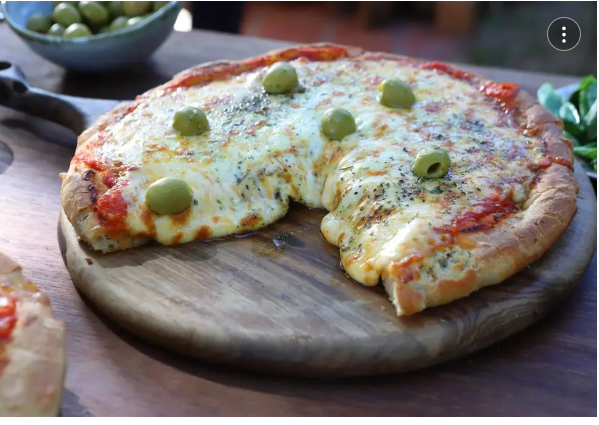

Pizza

Ingredientes
- Aceite de oliva 1 cda
- Agua 600 c.c.
- Harina 1 Kilo
- Levadura 10 Gramos
- Sal 1 Pizca
Preparación de la Receta
Masa
- En un bowl amplio colocar harina, sal y hacer una corona.
- En el centro colocar levadura, azúcar y agua.
- Comenzar a tomar la masa con las manos y amasar en la mesada hasta formar un bollo.
- Dividir en 4 bolos pequeños y dejar levar tapado por 30 minutos.
- Estirar en cada molde con aceite de oliva en la base y bollo hasta los bordes y dejar levar por 5 minutos.
- Agregar sobre los moldes con masa levada salsa de tomates y llevar a horno fuerte hasta cocinar la masa
y que haga un poco de piso aprox 5 minutos.